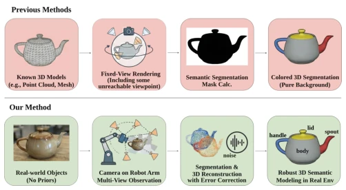
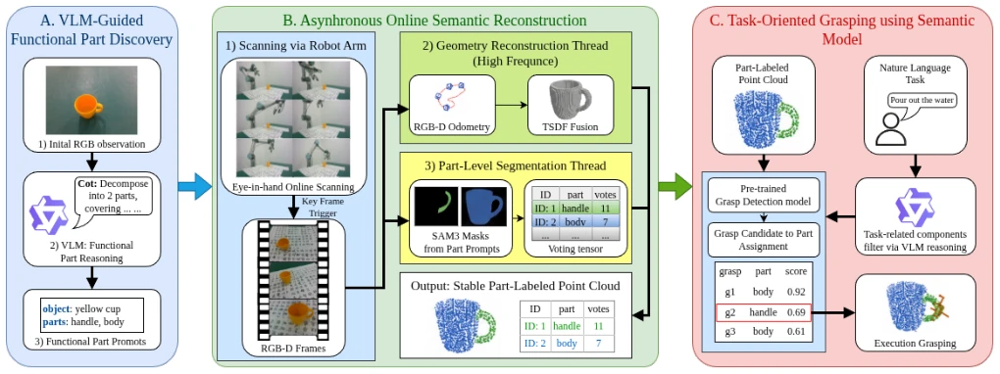
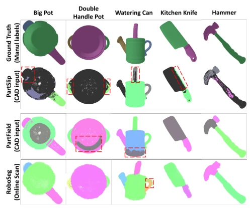

RoboSeg attempts to solve the "perception is grasping" last-mile problem in robotic manipulation, but essentially it just puts a semantic wrapper on AnyGrasp. It does not rely on CAD models, which is commendable, after all the real world does not have so many perfect meshes. The core approach is VLM for terminology, SAM3 for segmentation, TSDF for mapping, finally stabilizing semantics via a voting mechanism. However, the scale of 24 physical trials is really too small, the 21/24 success rate looks impressive, but ignores uncertainties at the mechanical execution level. It is more like a semantic indexing layer, rather than an end-to-end policy. The quality of VLM prompts directly determines the upper limit; once the VLM guesses blindly, everything fails afterwards. For thin parts (e.g., spouts), mIoU dropping to 70% also exposes the bottleneck of depth reconstruction. In short, engineering integration is done well, but generalization capability still needs more data verification, do not treat pilot as benchmark.
Existing 3D part segmentation methods such as PartSLIP [3], PartSTAD [5], and ZeroPS [6] mostly assume known complete geometry (CAD or point clouds), which is unrealistic in actual operations. When robots face unknown objects, what is needed are functional parts (e.g., handles, spouts), rather than overall categories. Traditional 2D segmentation models like SAM [7] can perform open-vocabulary segmentation, but are often interfered by texture or reflections, making stable mapping to 3D difficult. Open-vocabulary semantic mapping systems like ConceptFusion [9] mostly focus on room-level understanding, lacking manipulation-level granularity. RoboSeg aims to fill this gap, building an online perception-grasping interface without pre-scanning, ensuring semantic mapping can directly guide task-relevant grasping, rather than just for visualization.

Fig. 1. Problem setting contrast. Offline 3D part segmentation typically starts from known or precomputed complete object geometry, such as a mesh or complete point cloud, and then outputs part labels. RoboSeg targets an online manipulation setting: the robot observes an unknown object with an eye-in-hand RGB-D camera, discovers functional parts from the initial view, reconstructs geometry during scanning, and maintains a part-level map for grasp-candidate selection.
The system is divided into three modules. Module A utilizes Qwen3-VL [12] to analyze initial RGB frames, outputting compact functional part names (e.g., "kettle handle"), serving as prompts for SAM3 [1] to limit the search space. Module B is asynchronous online reconstruction: high-frequency threads handle RGB-D odometry and TSDF fusion, low-frequency keyframes trigger SAM3 semantic segmentation. Projected 2D masks are fused via voxel voting tensor, each voxel retains Top-3 instance IDs and vote counts, suppressing inter-frame jitter. Module C task-oriented grasping: AnyGrasp [2] generates candidates, filters based on semantic labels, selects candidates matching task instructions. The overall process requires no CAD, directly building labeled point clouds from eye-in-hand camera observations. This design treats semantics as an indexing layer, rather than replacing the grasping detector, ensuring task conditions can constrain candidate selection.

Fig. 2. RoboSeg system architecture. A: VLM-guided functional part discovery converts the initial RGB observation into an object name and compact functional part prompts. B: Asynchronous online semantic reconstruction decouples high-frequency RGB-D odometry and TSDF fusion from keyframe- triggered SAM3 part-mask prediction; projected masks are accumulated in a voxel-voting tensor to produce a stable part-labeled point cloud. C: Task-oriented grasping resolves a natural-language task to task-relevant part labels, assigns pretrained grasp-detector candidates to semantic parts, and executes the selected candidate. Algorithm 1 RoboSeg end-to-end pipeline
Using UR5 robot arm + RealSense D435i, testing 4 object classes, 8 tasks, totaling 24 physical trials. Comparison baselines include PartSLIP [3] and PartField [30]. Metrics include mIoU, physical success rate, part contact success rate. RoboSeg achieves 83.4% mIoU on 5 objects, superior to PartField's 83.2% (under shared labels). In physical trials, 24/24 task part contacts succeeded, but overall task success was 21/24, failures mostly due to mechanical execution instability rather than semantic errors. AnyGrasp candidate assignment coverage reached 89.7%. Results show semantic indexing is effective, but small sample size limits conclusion generalizability.

Fig. 3. Qualitative functional-part comparison. Columns show Big Pot, Double Handle Pot, Watering Can, Kitchen Knife, and Hammer. PartSLIP and PartField operate on clean mesh or processed complete geometry, while RoboSeg constructs part labels from robot-acquired online scans without mesh input. Red dashed boxes highlight manipulation-critical regions such as handles, spouts, blades, and tool heads.